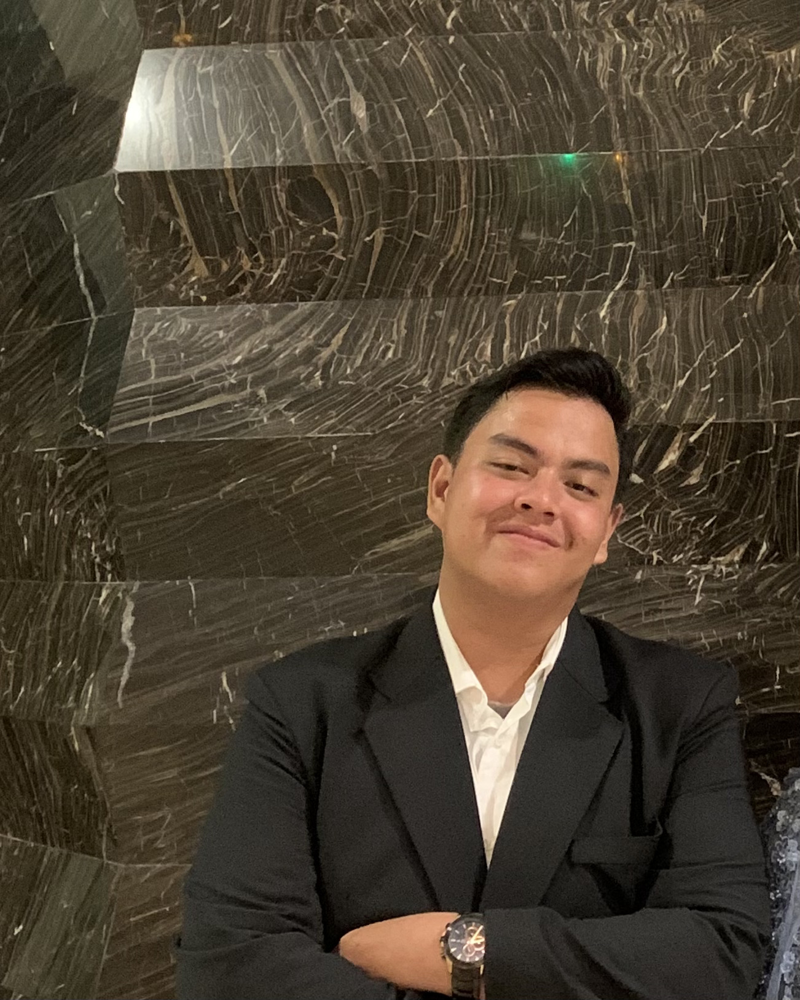

Tempat/Tgl Lahir:
Medan, 1 Maret 2005
Jenis Kelamin:
Laki-laki
Agama:
Islam
Kewarganegaraan:
Indonesia
0812 7564 7965
raihanazharilubis@gmail.com
jln. Besar deli Tua No.9
Analytical Thinking
Contract Drafting
Negotiating
Public Speaking
Research
LinkedIn: Raihan Azhari
IG: raihanazhrii_
TikTok: raihanazhari
Saya Raihan mahasiswa Teknik Informatika yang antusias dalam bidang desain web dan pengembangan digital. Saya memiliki semangat tinggi dalam menciptakan solusi kreatif melalui teknologi dan terus belajar untuk mengasah keterampilan saya di dunia digital
SMA Harapan Mandiri (2020–2023, Medan)
SMP Harapan Mandiri (2018–2020, Medan)
SD Yayasan Pendidikan Islam (2013–2018, Deli Tua)
Belum memiliki pengalaman kerja formal.